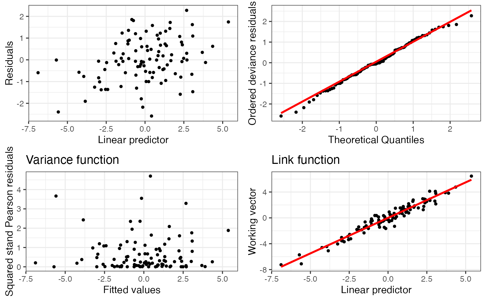

The Induced Smoothed Lasso: A practical framework for hypothesis testing in high dimensional regression
islasso.RdThis package implements an induced smoothed approach for hypothesis testing in Lasso regression.
Fits regression models with a smoothed L1 penalty under the induced smoothing paradigm. Supports linear, logistic, Poisson, and Gamma responses. Enables reliable standard errors and Wald-based inference.
Usage
islasso(
formula,
family = gaussian,
lambda,
alpha = 1,
data,
weights,
subset,
offset,
unpenalized,
contrasts = NULL,
control = is.control()
)Arguments
- formula
A symbolic formula describing the model.
- family
Response distribution. Can be
gaussian,binomial,poisson, orGamma.- lambda
Regularization parameter. If missing, it is estimated via
cv.glmnet.- alpha
Elastic-net mixing parameter (\(0 \le \alpha \le 1\)).
- data
A data frame or environment containing the variables in the model.
- weights
Observation weights. Defaults to 1.
- subset
Optional vector specifying a subset of rows to include.
- offset
Optional numeric vector of offsets in the linear predictor.
- unpenalized
Vector indicating variables (by name or index) to exclude from penalization.
- contrasts
Optional contrasts specification for factor variables.
- control
A list of parameters to control model fitting. See
is.control.
Value
A list with components such as:
- coefficients
Estimated coefficients
- se
Standard errors
- fitted.values
Fitted values
- deviance, aic, null.deviance
Model diagnostic metrics
- residuals, weights
IWLS residuals and weights
- df.residual, df.null, rank
Degrees of freedom
- converged
Logical; convergence status
- model, call, terms, formula, data, offset
Model objects
- xlevels, contrasts
Factor handling details
- lambda, alpha, dispersion
Model parameters
- internal
Other internal values
Details
| Package: | islasso |
| Type: | Package |
| Version: | 1.6.0 |
| Date: | 2025-07-30 |
| License: | GPL-2 |
islasso fits generalized linear models with an L1 penalty on selected coefficients.
It returns both point estimates and full covariance matrices, enabling standard error-based inference.
Related methods include: summary.islasso, predict.islasso, logLik.islasso, deviance.islasso, and residuals.islasso.
islasso.path fits regularization paths using the Induced Smoothed Lasso.
It computes coefficients and standard errors across a grid of lambda values.
Companion methods include: summary.islasso.path, predict.islasso.path, logLik.islasso.path, residuals.islasso.path, coef.islasso.path, and fitted.islasso.path.
The non-smooth L1 penalty is replaced by a smooth approximation, enabling inference through standard errors and Wald tests. The approach controls type-I error and shows strong power in various simulation settings.
References
Cilluffo, G., Sottile, G., La Grutta, S., Muggeo, VMR (2019). *The Induced Smoothed lasso: A practical framework for hypothesis testing in high dimensional regression*, Statistical Methods in Medical Research. DOI: doi:10.1177/0962280219842890
Sottile, G., Cilluffo, G., Muggeo, VMR (2019). *The R package islasso: estimation and hypothesis testing in lasso regression*. Technical Report on ResearchGate. DOI: doi:10.13140/RG.2.2.16360.11521
Cilluffo G., Sottile G., La Grutta S., Muggeo V.M.R. (2019) The Induced Smoothed Lasso: A practical framework for hypothesis testing in high dimensional regression. Statistical Methods in Medical Research. DOI: 10.1177/0962280219842890
Sottile G., Cilluffo G., Muggeo V.M.R. (2019) The R package islasso: estimation and hypothesis testing in lasso regression. Technical Report. DOI: 10.13140/RG.2.2.16360.11521
See also
Useful links:
summary.islasso, predict.islasso, logLik.islasso
Author
Gianluca Sottile, based on preliminary work by Vito Muggeo. Maintainer: gianluca.sottile@unipa.it
Gianluca Sottile gianluca.sottile@unipa.it
Examples
n <- 100; p <- 100
beta <- c(rep(1, 5), rep(0, p - 5))
sim1 <- simulXy(n = n, p = p, beta = beta, seed = 1, family = gaussian())
o <- islasso(y ~ ., data = sim1$data, family = gaussian())
summary(o, pval = 0.05)
#>
#> Call:
#> islasso(formula = y ~ ., family = gaussian(), data = sim1$data)
#>
#> Residuals:
#> Min 1Q Median 3Q Max
#> -1.72365 -0.38639 -0.03156 0.44823 1.44143
#>
#> Estimate Std. Error Df z value Pr(>|z|)
#> (Intercept) 0.008689 0.079531 1.000 0.109 0.913
#> X1 0.808500 0.087765 1.000 9.212 <2e-16 ***
#> X2 0.879434 0.088049 1.000 9.988 <2e-16 ***
#> X3 0.904605 0.085218 1.000 10.615 <2e-16 ***
#> X4 0.790340 0.087256 1.000 9.058 <2e-16 ***
#> X5 0.972696 0.089154 1.000 10.910 <2e-16 ***
#> ---
#> Signif. codes: 0 ‘***’ 0.001 ‘**’ 0.01 ‘*’ 0.05 ‘.’ 0.1 ‘ ’ 1
#>
#> (Dispersion parameter for gaussian family taken to be 0.6325138)
#>
#> Null deviance: 611.761 on 99.00 degrees of freedom
#> Residual deviance: 41.728 on 65.97 degrees of freedom
#> AIC: 109.78
#> Lambda: 8.7348
#>
#> Number of Newton-Raphson iterations: 102
#>
coef(o)
#> (Intercept) X1 X2 X3 X4
#> 8.689109e-03 8.085002e-01 8.794339e-01 9.046052e-01 7.903400e-01
#> X5 X6 X7 X8 X9
#> 9.726956e-01 -8.702541e-07 -1.472977e-02 6.886191e-07 3.698346e-02
#> X10 X11 X12 X13 X14
#> -1.898524e-07 1.651990e-02 2.064551e-07 -1.996664e-07 1.371775e-07
#> X15 X16 X17 X18 X19
#> 6.807706e-08 -2.622097e-03 1.683178e-07 -6.042710e-03 -4.798242e-02
#> X20 X21 X22 X23 X24
#> 2.606441e-02 7.338383e-02 -6.269821e-03 -1.935021e-02 8.506026e-02
#> X25 X26 X27 X28 X29
#> 1.383303e-02 3.000629e-03 -1.126651e-04 -3.326426e-03 4.293873e-02
#> X30 X31 X32 X33 X34
#> 7.528465e-07 -5.097298e-07 -7.689730e-07 1.709048e-07 8.431612e-07
#> X35 X36 X37 X38 X39
#> 3.280254e-08 5.653197e-03 6.438007e-07 -9.286658e-07 -1.500947e-02
#> X40 X41 X42 X43 X44
#> -2.767957e-03 3.509988e-07 5.655459e-06 3.511654e-07 -2.113713e-02
#> X45 X46 X47 X48 X49
#> -1.224452e-02 -6.089917e-07 1.397736e-02 1.138388e-02 -7.723049e-03
#> X50 X51 X52 X53 X54
#> 2.993860e-02 3.348782e-06 2.410882e-07 -9.666186e-07 5.419647e-02
#> X55 X56 X57 X58 X59
#> -6.485534e-07 -2.814191e-03 -3.317488e-07 1.384525e-02 3.423789e-07
#> X60 X61 X62 X63 X64
#> 1.546772e-07 2.290412e-02 1.501548e-02 2.124688e-02 -5.118178e-07
#> X65 X66 X67 X68 X69
#> 3.009207e-03 -2.795136e-07 2.989569e-02 3.485097e-07 -4.309710e-08
#> X70 X71 X72 X73 X74
#> 1.319178e-02 9.380076e-07 2.753654e-07 -1.680304e-08 2.201102e-02
#> X75 X76 X77 X78 X79
#> 9.262371e-07 -2.648323e-07 -6.235187e-07 1.378750e-07 8.072261e-07
#> X80 X81 X82 X83 X84
#> -6.102942e-03 9.090268e-07 4.337735e-07 -1.586795e-01 4.761674e-02
#> X85 X86 X87 X88 X89
#> 9.409502e-02 1.379337e-07 -7.386521e-02 2.183171e-07 -8.937826e-02
#> X90 X91 X92 X93 X94
#> 1.764915e-07 -9.351897e-07 -2.725937e-02 -4.346469e-07 -5.672924e-07
#> X95 X96 X97 X98 X99
#> 1.376960e-02 -6.164901e-03 8.374049e-07 -9.556129e-07 -1.474438e-07
#> X100
#> 4.786203e-07
fitted(o)
#> 1 2 3 4 5 6
#> 0.46781602 2.26807010 0.31027779 0.23506786 -1.69625406 3.68802029
#> 7 8 9 10 11 12
#> 1.15765892 2.23475415 1.14905619 1.61994717 1.37870156 0.98085302
#> 13 14 15 16 17 18
#> 1.03967193 -5.58638544 0.88134521 2.37548722 -0.32880864 -1.05311781
#> 19 20 21 22 23 24
#> -0.54556131 2.67991974 0.74371292 2.30259530 -0.58758994 -5.71205524
#> 25 26 27 28 29 30
#> 0.41826363 3.89719615 -2.59045759 -3.24743859 -2.00921182 -0.26502725
#> 31 32 33 34 35 36
#> -1.89076346 -4.25443792 -1.10415133 -0.24205092 -0.84981450 -1.40971480
#> 37 38 39 40 41 42
#> 1.28987462 -1.54665904 0.47457646 0.78352484 -1.09790340 2.48694842
#> 43 44 45 46 47 48
#> -0.59799526 -0.28937117 -2.40352036 -6.89024976 1.43043238 0.03376507
#> 49 50 51 52 53 54
#> -0.61616936 -0.10427026 3.07383474 -0.21704241 -0.46706555 -3.94696147
#> 55 56 57 58 59 60
#> 0.30311899 2.40173617 -2.54339450 -2.98754473 -2.99209862 1.71038476
#> 61 62 63 64 65 66
#> 0.54320419 2.34733082 1.94954423 1.22131026 0.38959094 3.01518492
#> 67 68 69 70 71 72
#> -2.82457729 -0.23246183 0.91149850 1.33085743 1.59714747 -1.52870708
#> 73 74 75 76 77 78
#> 0.12771534 1.66423258 -1.47672822 -0.06552089 -0.74863996 2.69910290
#> 79 80 81 82 83 84
#> 0.99523696 3.04630422 -1.06649403 0.16110829 0.86732786 -3.85023081
#> 85 86 87 88 89 90
#> 3.07415393 1.32666851 0.07466885 -1.26536667 -2.92667524 -0.14759037
#> 91 92 93 94 95 96
#> -0.61403922 4.35478328 0.83649237 0.07335727 5.36954695 -2.47468965
#> 97 98 99 100
#> 2.68335335 -1.86881247 -1.01815091 -1.42565104
predict(o, type="response")
#> 1 2 3 4 5 6
#> 0.46781602 2.26807010 0.31027779 0.23506786 -1.69625406 3.68802029
#> 7 8 9 10 11 12
#> 1.15765892 2.23475415 1.14905619 1.61994717 1.37870156 0.98085302
#> 13 14 15 16 17 18
#> 1.03967193 -5.58638544 0.88134521 2.37548722 -0.32880864 -1.05311781
#> 19 20 21 22 23 24
#> -0.54556131 2.67991974 0.74371292 2.30259530 -0.58758994 -5.71205524
#> 25 26 27 28 29 30
#> 0.41826363 3.89719615 -2.59045759 -3.24743859 -2.00921182 -0.26502725
#> 31 32 33 34 35 36
#> -1.89076346 -4.25443792 -1.10415133 -0.24205092 -0.84981450 -1.40971480
#> 37 38 39 40 41 42
#> 1.28987462 -1.54665904 0.47457646 0.78352484 -1.09790340 2.48694842
#> 43 44 45 46 47 48
#> -0.59799526 -0.28937117 -2.40352036 -6.89024976 1.43043238 0.03376507
#> 49 50 51 52 53 54
#> -0.61616936 -0.10427026 3.07383474 -0.21704241 -0.46706555 -3.94696147
#> 55 56 57 58 59 60
#> 0.30311899 2.40173617 -2.54339450 -2.98754473 -2.99209862 1.71038476
#> 61 62 63 64 65 66
#> 0.54320419 2.34733082 1.94954423 1.22131026 0.38959094 3.01518492
#> 67 68 69 70 71 72
#> -2.82457729 -0.23246183 0.91149850 1.33085743 1.59714747 -1.52870708
#> 73 74 75 76 77 78
#> 0.12771534 1.66423258 -1.47672822 -0.06552089 -0.74863996 2.69910290
#> 79 80 81 82 83 84
#> 0.99523696 3.04630422 -1.06649403 0.16110829 0.86732786 -3.85023081
#> 85 86 87 88 89 90
#> 3.07415393 1.32666851 0.07466885 -1.26536667 -2.92667524 -0.14759037
#> 91 92 93 94 95 96
#> -0.61403922 4.35478328 0.83649237 0.07335727 5.36954695 -2.47468965
#> 97 98 99 100
#> 2.68335335 -1.86881247 -1.01815091 -1.42565104
plot(o)

#> TableGrob (2 x 2) "arrange": 4 grobs
#> z cells name grob
#> 1 1 (1-1,1-1) arrange gtable[layout]
#> 2 2 (1-1,2-2) arrange gtable[layout]
#> 3 3 (2-2,1-1) arrange gtable[layout]
#> 4 4 (2-2,2-2) arrange gtable[layout]
residuals(o)
#> 1 2 3 4 5 6
#> -0.530628992 -1.007609514 -0.349655673 -0.649570131 -0.147081613 0.208147626
#> 7 8 9 10 11 12
#> 0.116945426 0.722968614 -0.297716775 1.149034797 0.424193925 0.770099643
#> 13 14 15 16 17 18
#> -0.727267444 -1.522380376 0.241474500 -0.049620132 -0.191926344 0.035540624
#> 19 20 21 22 23 24
#> -0.894662460 1.441426662 -0.006160725 -0.524481774 -0.462885157 -0.005279323
#> 25 26 27 28 29 30
#> -1.723646103 -0.079863684 -0.284960368 -0.786096291 0.209195576 -0.134101141
#> 31 32 33 34 35 36
#> 0.493550145 -0.342619235 0.465280807 -1.220997633 1.219438955 0.188440722
#> 37 38 39 40 41 42
#> 0.454951725 -0.775142543 1.019102093 0.755559273 0.568076230 0.044554118
#> 43 44 45 46 47 48
#> 0.269591337 0.639329973 -0.830528646 -0.359458709 -0.153877355 -0.357769183
#> 49 50 51 52 53 54
#> -0.042659679 -0.068059823 0.711636953 0.394279647 -0.209668618 -0.487438817
#> 55 56 57 58 59 60
#> 0.020219869 0.425597608 -0.825990374 -0.550007660 -0.040364739 0.149939937
#> 61 62 63 64 65 66
#> -0.345774423 0.553832419 -0.409967621 -0.267279355 0.300792213 -0.419044676
#> 67 68 69 70 71 72
#> -0.868954712 -0.049426683 -0.241667929 -0.576517785 0.957092510 0.049532855
#> 73 74 75 76 77 78
#> 0.407841072 -0.022763389 0.844093475 -0.176488833 1.109655841 -0.003998693
#> 79 80 81 82 83 84
#> 0.445994568 1.054746873 0.908410245 0.276907341 0.627612489 -1.239623269
#> 85 86 87 88 89 90
#> -0.917786788 0.859924822 0.840218069 -0.378536500 -0.642585035 -1.497813191
#> 91 92 93 94 95 96
#> 0.758078906 0.405243807 0.125845853 -0.652911356 1.091375780 -0.086217078
#> 97 98 99 100
#> 0.191252596 -0.041742869 0.579273565 -0.047024869
deviance(o)
#> [1] 41.72812
AIC(o)
#> [1] 109.7844
logLik(o)
#> 'log Lik.' -19.86406 (df=35.02813)
if (FALSE) { # \dontrun{
# for the interaction
o <- islasso(y ~ X1 * X2, data = sim1$data, family = gaussian())
##### binomial ######
beta <- c(c(1,1,1), rep(0, p-3))
sim2 <- simulXy(n = n, p = p, beta = beta, interc = 1, seed = 1,
size = 100, family = binomial())
o2 <- islasso(cbind(y.success, y.failure) ~ .,
data = sim2$data, family = binomial())
summary(o2, pval = 0.05)
##### poisson ######
beta <- c(c(1,1,1), rep(0, p-3))
sim3 <- simulXy(n = n, p = p, beta = beta, interc = 1, seed = 1,
family = poisson())
o3 <- islasso(y ~ ., data = sim3$data, family = poisson())
summary(o3, pval = 0.05)
##### Gamma ######
beta <- c(c(1,1,1), rep(0, p-3))
sim4 <- simulXy(n = n, p = p, beta = beta, interc = -1, seed = 1,
dispersion = 0.1, family = Gamma(link = "log"))
o4 <- islasso(y ~ ., data = sim4$data, family = Gamma(link = "log"))
summary(o4, pval = 0.05)
} # }